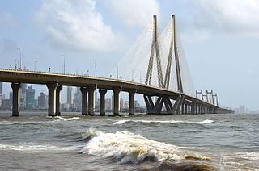
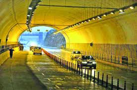
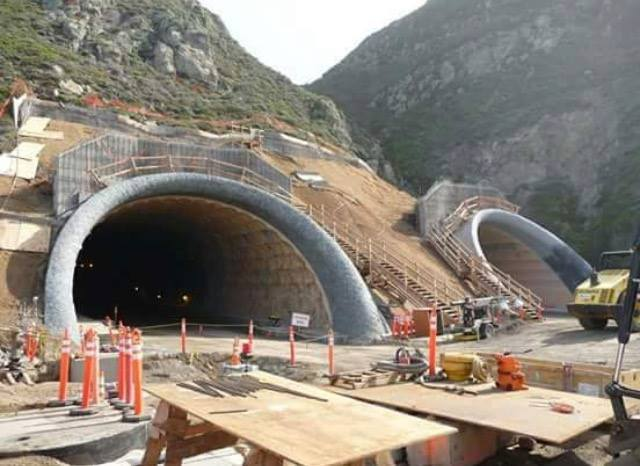
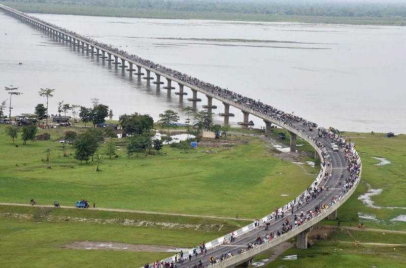
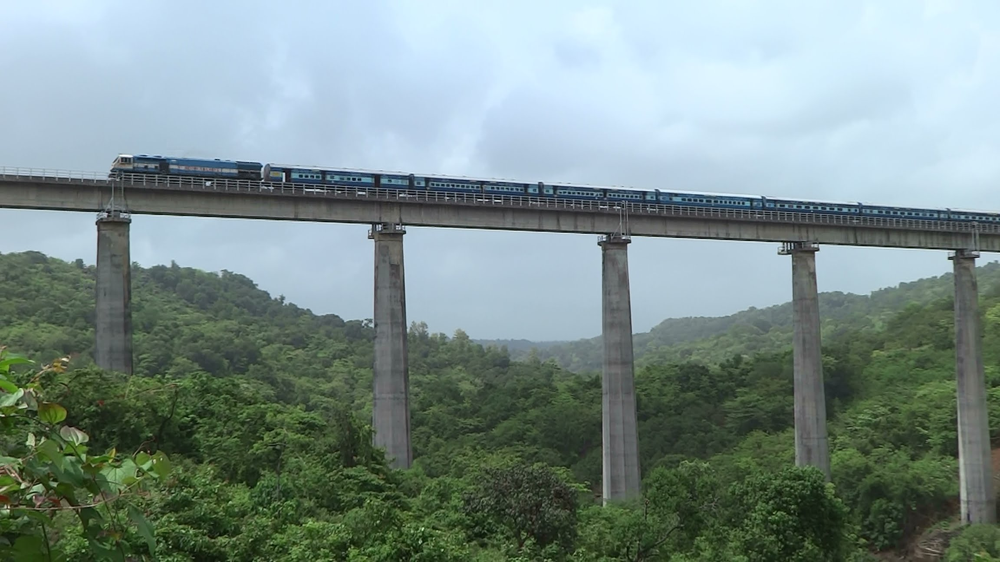
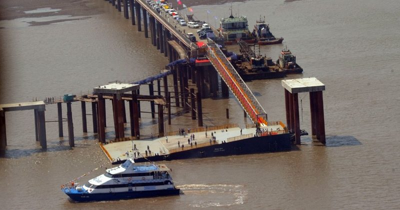
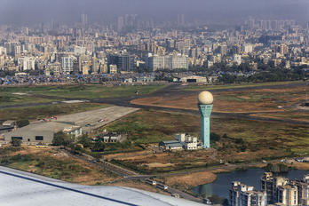
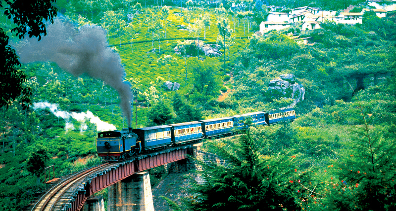
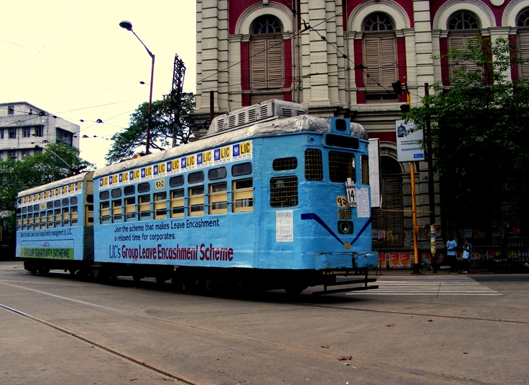
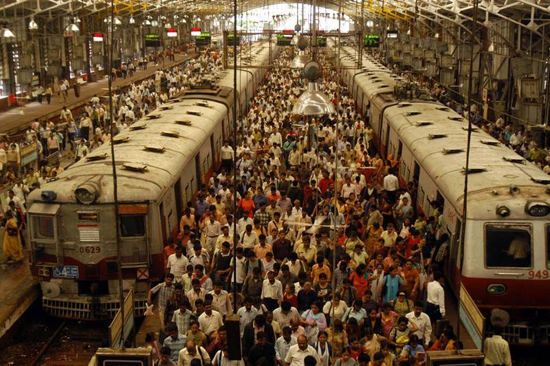

Major Developments in indian transportation System
-

Bandra-Worli Sea Link
The Bandra–Worli Sea Link is a cable-stayed bridge with pre-stressed concrete-steel viaducts on either side that links Bandra in the Western Suburbs of Mumbai with Worli in South Mumbai. The bridge is a part of the proposed Western Freeway that will link the Western Suburbs to Nariman Point in Mumbai's main business district. The ₹16 billion (US$250 million) bridge was commissioned by the Maharashtra State Road Development Corporation(MSRDC), and built by the Hindustan Construction Company. The first four of the eight lanes of the bridge were opened to the public on 30 June 2009. All eight lanes were opened on 24 March 2010. The sea-link reduces travel time between Bandra and Worli during peak hours from 60–90 minutes to 10 minutes. As of October 2009, BWSL had an average daily traffic of around 37,500 vehicles.
-

Chennai Narshi Tunnel
Chenani-Nashri Tunnel, also known as Patnitop Tunnel, is a road tunnel in the Indian state of Jammu and Kashmir on NH 44 (former name NH 1A before renumbering of all national highways). The work was started in 2011 and was inaugurated on 2 April 2017 by Prime minister Mr. Narendra Modi. It is India's longest road tunnel with a length of 9.28 km (5.8 mi). It is the first tunnel in the country with a fully integrated tunnel control system. The tunnel reduces the distance between Jammu and Srinagar by 30 km and cut travel time by two hours. The all-weather tunnel bypasses snowfall and avalanche prone areas in winter at places like Patnitop, Kud, and Batote that obstruct NH 44 every winter and cause long queues of vehicles - sometimes for days at length.
-

Pir Panjal Tunnel
The Pir Panjal Railway Tunnel or Banihal railway tunnel is an 11.215 km (7 mile) railway tunnel located in Pir Panjal Range of middle Himalayas in Jammu and Kashmir, India, north of Banihal town.
-

Dhola Sadiya Bridge
The Dhola–Sadiya Bridge, also referred to as the Bhupen Hazarika Setu (Assamese: ভূপেন হাজৰিকা সেতু), is a beam bridgein India, connecting the northeast states of Assam and Arunachal Pradesh. The bridge spans the Lohit River, a major tributary of the Brahmaputra River, from the village of Dhola (Tinsukia District) in the south to Sadiya to the north. The bridge is the first permanent road connection between the northern Assam and eastern Arunachal Pradesh. At 9.15 kilometres (5.69 mi) in length, it is the longest bridge in India. However, the New Ganga Bridge Project under construction in the Indian state of Bihar, is expected to become the longest bridge in India upon its estimated completion in December 2020, with a length of 9.8 kilometres (6.1 mi) With rapid movement of India's defense assets in mind following incursions by the Chinese Army, the Dhola–Sadiya Bridge has been designed to handle the weight of 60-tonne (130,000-pound) tanks such as the Indian Army's Arjun and T-72 main battle tanks. Since the Sino-Indian War, China has disputed India's claim to Arunachal Pradesh, politically and militarily, along the Line of Actual Control, making the bridge an important tactical asset in the ongoing dispute.
-

Konkan Railways
The Konkan Railway (abbreviated KR and कोरे) is a subsidiary zone of the Indian Railways. It is one of the 17 zones of the Indian Railways but without any divisional structure unlike other railways zones in India. It is operated by Konkan Railway Corporation Limited, headquartered at CBD Belapur in Navi Mumbai, Maharashtra. The first passenger train ran on Konkan railway tracks on 20 March 1993 between Udupi and Mangalore.[1]During its initial years of operation in the mountainous Konkan region, a spate of accidents prompted Konkan Railway to investigate new technologies. The anti-collision devices, the Sky Bus and RORO are a few of the innovations from Konkan Railway. It was the missing link between Mumbai, Maharashtra and Mangalore, Karnataka and the southwestern coastal cities of India. The 741 km (461 mi) line connects Maharashtra, Goaand Karnataka states in India. The first train on the completed track was flagged off on January 26, 1998, the Republic Day of India.
-

Ro-Ro Ferry Service
RORO ferry service, Gujarat was launched by PM Narendra Modi on 22 October 2017. The first phase between Ghogha and Dahej costed ₹6.15 billion to the exchequer. It will reduce the travel time between the two places from 6-8 hours to 1-1.5 hours.
-

Juhu Aerodrome
Juhu Aerodrome (ICAO: VAJJ) is located in Juhu, an upmarket residential suburb of Mumbai, India. It is used by small General Aviation aircraft and helicopters. Founded in 1928 as India's first civil aviation airport, Juhu served as the city's primary airport during and up to World War II. In 1948, commercial operations were moved to the much larger RAF Santacruz which was built 2 km east of Juhu aerodrome during the war. In 1932, JRD Tata landed at the Juhu aerodrome, inaugurating India's first scheduled commercial mail service. Today, the aerodrome handles all helicopter operations out of Mumbai. It also hosts the Bombay Flying Club and several executive and light aircraft and gliders. In 2010, the Airports Authority of India (AAI), which runs the airport, proposed to extend the runway 08/26 into the sea to allow larger aircraft to land, however permission for this was denied by the Ministry of Environment and Forests. With the New Coastal Regulation Zone (CRZ) rules of 2011 permitting roads on stilts, the Airports Authority of India announced in January 2012 that it would once again pursue its plan of extending the runway at Juhu Aerodrome into the sea.
-

Mountain Railway of India
The Mountain railways of India refer to railway lines built in the mountains of India. Three of these railways, the Darjeeling Himalayan Railway, the Nilgiri Mountain Railway, and the Kalka–Shimla Railway, are collectively designated as a UNESCO World Heritage Siteunder the name Mountain Railways of India. The fourth railway, the Matheran Hill Railway, is on the tentative list of UNESCO World Heritage Sites. All these are narrow-gauge railways; the Nilgiri Mountain Railway is also the only rack railway in India. Some mountain railways such as the Lumding–Badarpur section have been converted to 1,676 mm (5 ft 6 in) broad gauge, which is the nationwide standard, while some railways such as the Kangra Valley Railway are in the process of being converted to broad gauge. Some mountain railways such as the Jammu–Baramulla line are currently under construction, and others are in the planning stage, including the Bilaspur–Manali–Leh line, the Jammu–Poonch line, the Srinagar–Kargil–Leh line, and the Chota Char Dham Railway. All the mountain railways constructed in recent times use 1,676 mm (5 ft 6 in) broad gauge.
-

Kolkata tram
The tram system in the city of Kolkata, West Bengal, India, operated by the Calcutta Tramways Company (CTC), is the only tram network operating in India. The oldest operating electric tram system in Asia, it has been running since 1902.
-

Mumbai Suburban Railway
Mumbai Suburban Railway consists of exclusive inner suburban railway lines augmented by commuter rail on main lines serving outlying suburbs to serve the Mumbai Metropolitan Region. Spread over 465 kilometres (289 mi), the suburban railway operates 2,342 train services and carries more than 7.5 million commuters daily. By annual ridership (2.64 billion), the Mumbai Suburban Railway is one of the busiest commuter rail systems in the world and it has the most severe overcrowding in the world. Trains run from 04:00 until 01:00, and some trains also run up to 02:30.